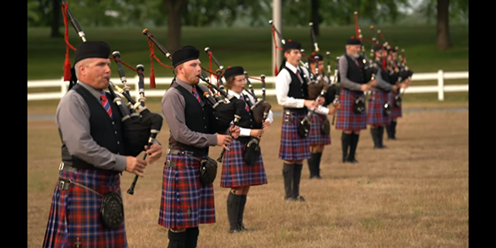

Following my high school graduation in 2015, I attended the University of Ottawa in the Telfer School of Business. I eventually realized that business was not my forte, and began the process of attempting to transfer into the Journalism program. By the end of the year I realized that my poor grades in the business program were not going to allow me to transfer directly into another faculty, so I decided to circumvent the beauocracy and attended Algonquin College's Journalism program. After two years of hard work, friendship and teamwork, I graduated from the program and transfered back to the University of Ottawa through the bridge program. I am currently close to a quarter of the way through my final year. Although my first two years in post-secondary education were not so successful, I still learned a lot about myself, my limits, what I wanted out of life, what I wanted to do and who I wanted to be.
I have been playing the bagpipes since I was about seven years old. I joined the Glengarry Pipe Band after a couple years attending the Glengarry School of Piping and Drumming, and have been with them ever since. As a band we have travelled to many places all over Ontario, Canada's eastern coast, the United States, and even Scotland. In 2013 we were awarded sixth place in the World Pipe Band Championships; held in Glasgow, Scotland, making us the 6th best pipe band in the world in our division for that year. I also compete in solo competitions and have won numerous awards over the years.
With COVID-19 we were unable to compete this summer season, but managed to still get togther after restrictions lifted to allow more people to gather. We even managed to do a live recording to contribute to the virtual Glengarry Highland Games, which was used as a substitute to the annual event. That was the only opportunity all three of our bands had to get together and perform; albeit with restrictions to social distancing.